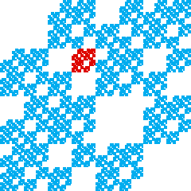
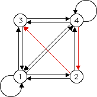

IFS with Memory
Romes and IFS without memory


4 → 2 → 3
generates the region with address 324.
Click each part of the picture to see the sequence of edges of the graph that generate that part.
Return to
IFS without memory
.